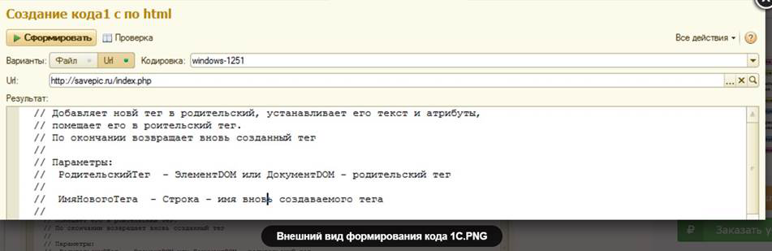

Этот механизм пригодится, если вы имеете шаблон в виде html, а вам нужно формировать его программно. Используя эту обработку, можно взять файл или адрес в интернете и построить программный код 1С, для его дальнейшего использования в своих работах. Для формирования используется документ dom.
Функционально на выходе вы получите 1 процедуру и 1 функцию. Процедура формирует документ dom. Функция упрощает написание кода добавления нового тега. Хочу обратить ваше внимание, что теги типа pre и code, возможно, нужно создавать в секции cdata, потому как там скорее всего встретится форматирование и спецсимволы, задействованные в html. При необходимости все это можно доработать.
Описывать загрузку и создание объекта документ dom я не буду, так как это не относится к основной теме статьи. Перейдем сразу к ядру формирования.
Функция ПереборВсехЭлементовДокументаDOM(Домик, СтрокаКода, ИмяРодителя, Счетчик, Префикс = "")
КоллекцияУзлов = Домик.ДочерниеУзлы;
ЛокальныйСчетчик = 0;
Для Каждого ОчереднойУзел Из КоллекцияУзлов Цикл
ЛокальныйСчетчик = ЛокальныйСчетчик + 1;
Если ОчереднойУзел.ТипУзла = ТипУзлаDOM.Элемент Тогда
//формируем префикс, он начинается с первого рекурсивного вызова
Если Счетчик = 1 Тогда
Префикс = Формат(Счетчик, "ЧГ=");
КонецЕсли;
//имя переменной (тега), "домик" только для первого вызова, лок. счетчик тоже
ИмяПеременной = ?(ИмяРодителя = "Домик", "Тег_", ИмяРодителя) + Префикс + "_" + Формат(ЛокальныйСчетчик, "ЧГ=");
//начало формирование строки кода. "&Текстовка" будем потом заменять
СтрокаКода = СтрокаКода + Символы.Таб + ИмяПеременной +
" = ДобавитьТегСАтрибутом(" + ИмяРодителя + ?(Счетчик = 1, "", Префикс) + ", """ + ОчереднойУзел.ИмяУзла + """, &Текстовка ";
//Отработка атрибутов
Если ОчереднойУзел.Атрибуты <> Неопределено Тогда
СтрокаИменАтрибутов = "";
СтрокаЗначенийАтрибутов = "";
СтрокаИд = "";
Для Каждого ОчереднойАтрибут Из ОчереднойУзел.Атрибуты Цикл
//идентификатор это особенный атрибут, его пихнем последним параметром функции ДобавитьТегСАтрибутом()
Если ВРег(ОчереднойАтрибут.Имя) = "ID" Тогда
СтрокаИд = ОчереднойАтрибут.Значение;
Иначе
СтрокаИменАтрибутов = СтрокаИменАтрибутов + ОчереднойАтрибут.Имя + ",";
СтрокаЗначенийАтрибутов = СтрокаЗначенийАтрибутов + ОчереднойАтрибут.Значение + ",";
КонецЕсли;
КонецЦикла;
//отсечение последней запятой
Если СтрЗаканчиваетсяНа(СтрокаИменАтрибутов, ",") Тогда
СтрокаИменАтрибутов = Лев(СтрокаИменАтрибутов, СтрДлина(СтрокаИменАтрибутов) - 1);
КонецЕсли;
Если СтрЗаканчиваетсяНа(СтрокаЗначенийАтрибутов, ",") Тогда
СтрокаЗначенийАтрибутов = Лев(СтрокаЗначенийАтрибутов, СтрДлина(СтрокаЗначенийАтрибутов) - 1);
КонецЕсли;
//дозаполнение строки кода
СтрокаКода = СтрокаКода + ", """ + СтрокаИменАтрибутов + """, """ + СтрокаЗначенийАтрибутов + """";
//добавляем идентификатор, если он не пуст
Если Не ПустаяСтрока(СтрокаИд) Тогда
СтрокаКода = СтрокаКода + ", """ + СтрокаИд + """";
КонецЕсли;
КонецЕсли;
//закрываем скобку Функции
СтрокаКода = СтрокаКода + ");" + Символы.ПС;
//рекурсивный вызов
Если ОчереднойУзел.ДочерниеУзлы.Количество() > 0 Тогда
//ИмяНовогоРодителя = "Тег" + Формат(Счетчик, "ЧГ=");
//СтрокаКода = СтрокаКода + ИмяНовогоРодителя + " = Тег;" + Символы.ПС;
ПереборВсехЭлементовДокументаDOM(
ОчереднойУзел,
СтрокаКода,
"Тег_",
Счетчик + 1,
Префикс + "_" + Формат(ЛокальныйСчетчик, "ЧГ="));
КонецЕсли;
ИначеЕсли ОчереднойУзел.ТипУзла = ТипУзлаDOM.Текст Тогда
Фрагмент = СокрЛП(ОчереднойУзел.ПолныйТекст);
Фрагмент = СтрЗаменить(Фрагмент, """", """""");//замена кавычек на 2 символа кавычек
СтрокаКода = СтрЗаменить(СтрокаКода, "&Текстовка", """" + Фрагмент + """");
КонецЕсли;
//на случай если текста у тега нет
СтрокаКода = СтрЗаменить(СтрокаКода, "&Текстовка", "");
КонецЦикла;
КонецФункции
Давайте рассмотрим, как это работает.
Исходный код универсальной функции создания нового тега (элемента) документа dom:
// Добавляет новй тег в родительский, устанавливает его текст и атрибуты,
// помещает его в роительский тег.
// По окончании возвращает вновь созданный тег
//
// Параметры:
// РодительскийТег - ЭлементDOM или ДокументDOM - родительский тег
//
// ИмяНовогоТега - Строка - имя вновь создаваемого тега
//
// ТекстТега - Строка - текстовое содержимое вновь создаваемого тега
//
// Атрибуты - Строка - имена (через запятую) или имя вновь создаваемого тега
//
// Значения атрибутов - Строка - значения (через запятую) или значение атрибутов
// для вновь создаваемого тега/ов
//
// Ид - Строка - Идентификатор для вновь создаваемого тега
//
// Возвращаемое значение:
// ЭлементDOM - возданный тег
//
Функция ДобавитьТегСАтрибутом(РодительскийТег, ИмяНовогоТега, ТекстТега = "", Атрибуты = "", ЗначенияАтрибутов = "", Ид = "") Экспорт
//проверки
Если ТипЗнч(РодительскийТег) <> Тип("ЭлементDOM") И ТипЗнч(РодительскийТег) <> Тип("ДокументDOM") Тогда
Сообщить("Процедура ДобавитьТегСАтрибутом() получила не верный параметр РодительскийТег(1)");
Возврат Неопределено;
КонецЕсли;
Если ИмяНовогоТега <> Неопределено И Типзнч(ИмяНовогоТега) <> Тип("Строка") Или ПустаяСтрока(ИмяНовогоТега) Тогда
Сообщить("Процедура ДобавитьТегСАтрибутом() получила не верный параметр ИмяНовогоТега(2)");
Возврат Неопределено;
КонецЕсли;
Если Типзнч(ТекстТега) <> Тип("Строка") Тогда
Сообщить("Процедура ДобавитьТегСАтрибутом() получила не верный параметр ТекстТега(3)");
Возврат Неопределено;
КонецЕсли;
Если Типзнч(Атрибуты) <> Тип("Строка") Тогда
Сообщить("Процедура ДобавитьТегСАтрибутом() получила не верный параметр Атрибуты(4)");
Возврат Неопределено;
КонецЕсли;
Если Типзнч(ЗначенияАтрибутов) <> Тип("Строка") Тогда
Сообщить("Процедура ДобавитьТегСАтрибутом() получила не верный параметр ЗначенияАтрибутов(5)");
Возврат Неопределено;
КонецЕсли;
Если Типзнч(Ид) <> Тип("Строка") Тогда
Сообщить("Процедура ДобавитьТегСАтрибутом() получила не верный параметр Ид(6)");
Возврат Неопределено;
КонецЕсли;
//Функционал
НовыйТег = РодительскийТег.ДокументВладелец.СоздатьЭлемент(ИмяНовогоТега);
//текстовка
Если Не ПустаяСтрока(ТекстТега) Тогда
Текстовка = РодительскийТег.ДокументВладелец.СоздатьТекстовыйУзел(ТекстТега);
НовыйТег.ДобавитьДочерний(Текстовка);
КонецЕсли;
//атрибуты
Если Не ПустаяСтрока(Атрибуты) И
Не ПустаяСтрока(ЗначенияАтрибутов) Тогда
МассивИменАтрибутов = СтрРазделить(Атрибуты, ",", Истина);
МассивЗначенийАтрибутов = СтрРазделить(ЗначенияАтрибутов, ",", Истина);
Для н = 0 По МассивИменАтрибутов.ВГраница() Цикл
Атрибут = СокрЛП(МассивИменАтрибутов[н]);
ЗначениеАтрибута = ?(МассивЗначенийАтрибутов.ВГраница() >= н , СокрЛП(МассивЗначенийАтрибутов[н]), "");
НовыйТег.УстановитьАтрибут(Атрибут, ЗначениеАтрибута);
КонецЦикла;
КонецЕсли;
//Идентификатор
Если Не ПустаяСтрока(Ид) Тогда
НовыйТег.УстановитьАтрибут("id", Ид);
НовыйТег.УстановитьАтрибутИдентификатор("id", Истина);
КонецЕсли;
РодительскийТег.ДобавитьДочерний(НовыйТег);
Возврат НовыйТег;
КонецФункции
Эта функция значительно упрощает создание элементов документа dom и может быть использована отдельно, так как весьма удобна. Описывать ее работу особого смысла нет. Добавление тега в родительский, установка атрибутов и текста. Контекст вызова не имеет значения.
Наконец на выходе мы получаем готовый код 1С, который можно вставлять в свой модуль. Править его и исмользовать по назначению. Более полный функционал можно взять из файла обработки, прикрепленного к статье.
